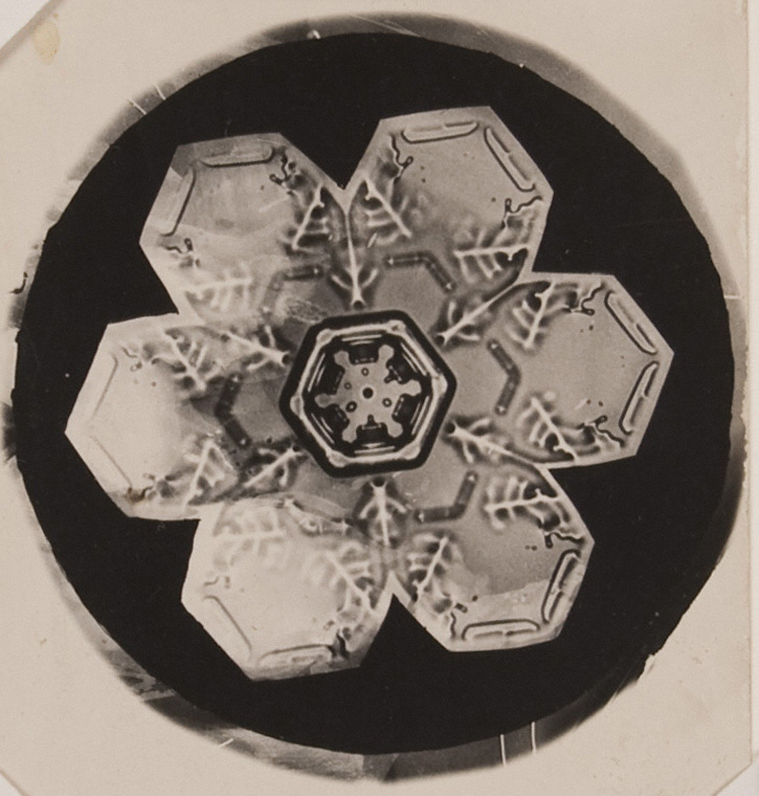
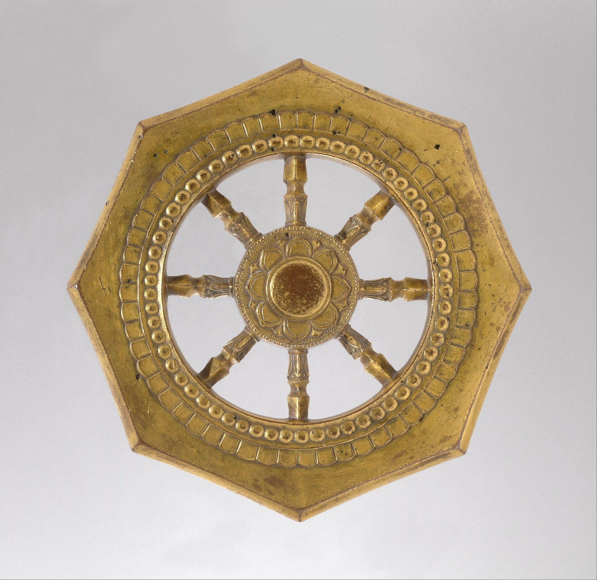

第34回
らせん階段が、中心へ向かって、幾重にもめぐっている。
gnuckx（2008年、ヴァチカン美術館のらせん階段を真上から）／CC0／Wikimedia Commons（横長に切り出した）
第20・29・31・32回で「第34回で詳しく」と先送りにした複素数を、ここでまとめて作る。2乗して $-1$ になる数 $i$ を足した数 $a+bi$ は、平面の上の点として見え、掛け算は「長さを掛けて、角度を足す」になる。そして第9回のテイラー展開に $x=i\theta$ を入れるだけで、$e^{i\theta}=\cos\theta+i\sin\theta$（オイラーの公式）が約束ではなく定理として出てくる。最後に、1の $n$ 乗根、正弦波の複素数表示、第30回の定常解を「複素数1つの割り算」にする方法、回転行列の固有値 $e^{\pm i\theta}$ へつなぐ。
第1回から続く約束どおり、新しい記号は緑色の枠（記号）で「①読み方 ②日本語での意味 ③省略していない書き方 ④どこで出会うか」を書く。この回では、複素数の書き方が $a+bi\to r(\cos\theta+i\sin\theta)\to re^{i\theta}\to r\angle\theta$ と短くなっていくので、省略の段階を 3.2 の表に示し、以後はそこに戻れるようにしてある。
各節は、「なぜ必要か → 定義 → 数値で一度手を動かす → 導出 → 確かめ → よくある誤解」の順に進む。式変形は1行に1操作だけ進め、右か下に理由を書く。高校で習った内容（複素数の計算、三角関数の加法定理）も、短く一度は書く。覚えている部分は飛ばしてよい。
前提：第9回（テイラー展開）と第14回（級数と収束）。ほかに、第20回（複素数の固有値）、第29回（複素数の根）、第30回（強制振動と共振）で、複素数を先に最小限だけ使った。この回は、その「あとから理由を示す」回である。
複素数を変数にした関数の微分・積分（正則関数、留数）は第35回と、応用数学Ⅱの公開教材応用数学Ⅱ 自習カリキュラム（複素関数 第1〜7回）で扱う。この回は、そこへ入る前に必要な「複素数そのもの」に絞る。
最初に、この回で新しく説明する記号と、前の回で説明済みの記号を分けて並べる。右の列の「→」で説明のある場所へ飛べる。
| 記号 | 読み方 | ざっくりした意味 | 説明 |
|---|---|---|---|
| $i$（工学では $j$） | アイ（ジェイ） | 2乗すると $-1$ になる数（虚数単位） | →1.2 |
| $z=a+bi$、$\mathbb C$ | ゼット、シー | 複素数、複素数全体の集合 | →1.2 |
| $\operatorname{Re}z$、$\operatorname{Im}z$ | リアル・パート、イマジナリー・パート | 実部、虚部 | →1.2 |
| 複素平面、実軸、虚軸 | ふくそへいめん | $z=x+iy$ を点 $(x,y)$ に対応させた平面 | →2.2 |
| $\bar z$（$z^*$） | ゼット・バー（ゼット・スター） | 複素共役（虚部の符号を逆にした数） | →2.4 |
| $\lvert z\rvert$ | ゼットの絶対値 | 原点からの距離 | →2.5 |
| $\arg z$、$\operatorname{Arg}z$ | アーギュメント | 偏角（実軸の正の向きから測った角）、主値 | →3.2 |
| 極形式 $r(\cos\theta+i\sin\theta)$、$r\angle\theta$ | きょくけいしき | 長さ $r$ と角 $\theta$ で書いた複素数 | →3.2 |
| ド・モアブルの公式 | ド・モアブル | $z^n$ は「長さを $n$ 乗、角を $n$ 倍」 | →3.6 |
| $e^{z}$（$z$ は複素数） | イー・ゼット | 第9回のべき級数で複素数まで広げた指数関数 | →4.2 |
| $e^{i\theta}=\cos\theta+i\sin\theta$ | オイラーの公式 | 単位円上の点を指数で書く | →4.4 |
| $\cos\theta=\dfrac{e^{i\theta}+e^{-i\theta}}2$ | ― | $\cos,\sin$ を指数関数で書く式 | →4.6 |
| 1の $n$ 乗根 $\zeta_n$（この回では $\omega_k$） | いちのエヌじょうこん | $z^n=1$ の解 | →5.1 |
| フェーザ、$H(i\omega)$ | ― | 正弦波を1つの複素数で表したもの、周波数応答 | →5.3、→5.4 |
| $\log z$（複素対数） | ログ・ゼット | $e^w=z$ となる $w$（多価） | →5.6 |
| 記号 | ざっくりした意味 | 説明 |
|---|---|---|
| $\mathbb N,\mathbb Z,\mathbb Q,\mathbb R,\mathbb C$、$\in$ | 数の集合、「属する」 | 第2回、$\in$ |
| $e^x$、$\lvert x\rvert$（実数） | 指数関数、数直線上の距離 | 第3回、絶対値 |
| $\sum$、$n!$、二項係数 | 総和、階乗、組合せの数 | 第4回、$n!$、$\binom nk$ |
| ベクトル、成分、行列の積 | 平面の矢印、行列とベクトルの積 | 第5回、第16回 |
| マクローリン展開 $e^x$、$\sin x$、$\cos x$ | $a=0$ のテイラー展開 | 第9回、4.1 $e^x$、4.2 $\sin x$、4.3 $\cos x$ |
| 収束、絶対収束、収束半径 | 部分和の極限、$\sum\lvert a_n\rvert$ が収束、べき級数の収束範囲 | 第14回、絶対収束、収束半径 |
| 虚数単位 $i$（暫定）、共役（暫定）、$e^{i\theta}:=\cos\theta+i\sin\theta$（約束） | この回で定義し直す | 第20回、第21回、第29回、暫定の公式 |
| 振幅 $X$、位相の遅れ $\varphi$、定常解 | $X\cos(\omega t-\varphi)$ の形 | 第30回、定常解 |
| 回転行列 $R(\theta)$、固有値、特性多項式 | 平面を $\theta$ だけ回す行列、$\det(A-\lambda I)=0$ の根 | 第16回、第20回、特性多項式 |
| $\operatorname{Re}\lambda$ と安定性 | 固有値の実部の符号で、原点に戻るかが決まる | 第32回 |
第20回で、回転行列 $R=\begin{pmatrix}0&-1\\1&0\end{pmatrix}$ の特性方程式 $\lambda^2+1=0$ が出た。第29回では、ばねの式の特性方程式 $\lambda^2+2\zeta\omega_n\lambda+\omega_n^2=0$ が、$\zeta<1$ のとき判別式が負になり、2次方程式の解の公式が使えなかった。どちらも「2乗して負の数になる数」を求めている。
実数の範囲では、どんな $x$ でも $x^2\ge0$ である（正の数の2乗は正、負の数の2乗も正、$0$ の2乗は $0$）。したがって $x^2=-1$ を満たす実数 $x$ は存在しない。図1.1 は、このことを $y=x^2+1$ のグラフで見たものである。グラフが横軸（$y=0$）に一度も届かないので、$x^2+1=0$ の実数解はない。
こうなったときの数学のやり方は、昔から決まっている。解けない式が出たら、解けるように数の範囲を広げる。たとえば、$x+3=0$ は自然数 $\mathbb N$ では解けないので整数 $\mathbb Z$ に広げ、$2x=1$ は整数では解けないので有理数 $\mathbb Q$ に広げ、$x^2=2$ は有理数では解けないので実数 $\mathbb R$ に広げた。図1.2 のとおりである。次の一歩が、$x^2=-1$ を解くための複素数 $\mathbb C$（第2回の数の集合の記号）になる。
①読み方：「アイ」。日本語で「虚数単位（きょすうたんい）」。電気工学では電流を $i$ と書くので、虚数単位を $j$（「ジェイ」）と書く。
②日本語での意味：2乗すると $-1$ になる、新しい数。実数の仲間ではないので、数直線のどこにも置けない。
③省略していない書き方：$i^2:=-1$。それ以外のことは何も約束しない。足し算と掛け算の規則（交換法則・結合法則・分配法則）は、実数と同じように成り立つものとする。
④どこで出会うか：第20回の複素固有値、第29回の振動解、交流回路（$j\omega$）、量子力学、フーリエ変換（第35回以降）。
①読み方：「ゼット・イコール・エー・プラス・ビー・アイ」。$\mathbb C$ は「シー」。日本語で「複素数（ふくそすう）」。
②日本語での意味：実数 $a,b$ を使って $a+bi$ と書ける数。実数2個の組で決まる数、と考えてよい。$b=0$ のとき $a+0i=a$ は実数そのものなので、実数は複素数の一部である（$\mathbb R\subset\mathbb C$）。
③省略していない書き方：
$$ \mathbb C\ :=\ \{\ a+bi\ :\ a\in\mathbb R,\ b\in\mathbb R\ \} $$
2つの複素数が等しいのは、実部どうしと虚部どうしがどちらも等しいときに限る：$a+bi=c+di\ \Longleftrightarrow\ a=c\ \text{かつ}\ b=d$（$a,b,c,d$ は実数）。1つの複素数は、$(a,b)$ という実数の組と1対1に対応する。この対応が 2章で使う複素平面の土台になる。
④どこで出会うか：固有値（第20回）、微分方程式の特性根（第29回）、フーリエ変換、交流回路、量子力学の波動関数。
①読み方：「リアル・パート・ゼット」「イマジナリー・パート・ゼット」。日本語で「実部（じつぶ）」「虚部（きょぶ）」。
②日本語での意味：$z=a+bi$ の$a$ の部分が実部、$b$ の部分が虚部。虚部は $b$ であって、$bi$ ではない（$i$ は付けない）。どちらも実数である。
③省略していない書き方：$a,b\in\mathbb R$ のとき
$$ \operatorname{Re}(a+bi)\ :=\ a,\qquad \operatorname{Im}(a+bi)\ :=\ b $$
例：$\operatorname{Re}(3-2i)=3$、$\operatorname{Im}(3-2i)=-2$（$-2i$ ではない）。$z=\operatorname{Re}z+i\operatorname{Im}z$ が成り立つ。
④どこで出会うか：固有値の実部の符号で安定性が決まる（第32回）、複素表示した波の実部をとる（5.3）、周波数応答。
計算規則は 1.2 のとおり、「$i$ を普通の文字として計算し、$i^2$ が現れたら $-1$ に置き換える」だけである。まず足し算と引き算。実部は実部どうし、虚部は虚部どうしで足す（$i$ を「みかん」と思って、同じ種類を足すのと同じ）。
$$ (a+bi)+(c+di)=(a+c)+(b+d)i,\qquad (a+bi)-(c+di)=(a-c)+(b-d)i $$
例：$(1+2i)+(3-i)=(1+3)+(2-1)i=4+i$。
次に掛け算。最小の具体例として $(1+2i)(3-i)$ を、1行に1操作で計算する。
① 分配法則で展開する：$(1+2i)(3-i)=1\cdot3+1\cdot(-i)+2i\cdot3+2i\cdot(-i)$。
② 各項を計算する：$=3-i+6i-2i^2$。
③ $i^2=-1$ を使う：$-2i^2=-2\cdot(-1)=2$。よって $=3-i+6i+2$。
④ 実部どうし、虚部どうしをまとめる：$=(3+2)+(-1+6)i=5+5i$。
一般の場合も同じ4段で進む。
① $(a+bi)(c+di)=ac+adi+bci+bdi^2$。
② $=ac+adi+bci-bd$。
③ $=(ac-bd)+(ad+bc)i$。
$$ (a+bi)(c+di)=(ac-bd)+(ad+bc)i $$
この式を暗記する必要はない。展開して $i^2=-1$ を使えば毎回出る。確かめ：$a=1,b=2,c=3,d=-1$ を入れると、実部 $ac-bd=3-(-2)=5$、虚部 $ad+bc=-1+6=5$ で、上の $5+5i$ と一致する。さらに特別な場合として $b=d=0$ なら $(a)(c)=ac$ となり、実数の掛け算に戻る。$a=c=0,\ b=d=1$ なら $i\cdot i=-1$ で、定義 $i^2=-1$ に戻る。
動機：割り算 $\dfrac wz$ は「$z$ の逆数を掛ける」ことなので、$z\ne0$ のとき $\dfrac1z$ がやはり $a+bi$ の形で書けるかを確かめたい。もし書けなければ、$\mathbb C$ の中で割り算ができないことになる。
最小の具体例：$\dfrac1{1+2i}$。分母から $i$ を消したい。そこで、$(1+2i)$ に掛けると実数になる相手を探す。$(1+2i)(1-2i)=1-2i+2i-4i^2=1+4=5$。虚部の符号だけを逆にした数を掛けると、$i$ が消えて実数になった。この相手に名前をつけるのが、2.4 の複素共役である。
① 分子と分母に同じ数 $1-2i$ を掛ける：$\dfrac1{1+2i}=\dfrac{1\cdot(1-2i)}{(1+2i)(1-2i)}$。
② 分母を計算する：$(1+2i)(1-2i)=5$（上のとおり）。分子は $1-2i$。
③ $=\dfrac{1-2i}{5}=\dfrac15-\dfrac25i$。
確かめ：$(1+2i)\Bigl(\dfrac{1-2i}{5}\Bigr)=\dfrac{5}{5}=1$。たしかに逆数である。
一般の $z=a+bi\ne0$（$a,b$ が両方 $0$ ではない）について、同じ手順で
$$ \frac1{a+bi}=\frac{a-bi}{(a+bi)(a-bi)}=\frac{a-bi}{a^2+b^2}=\frac{a}{a^2+b^2}-\frac{b}{a^2+b^2}\,i $$
分母 $(a+bi)(a-bi)=a^2-abi+abi-b^2i^2=a^2+b^2$ は、$a,b$ の少なくとも一方が $0$ でなければ正の実数である。したがって $z\ne0$ なら必ず逆数があり、$\mathbb C$ の中で割り算ができる。割り算の例：$\dfrac{3+i}{1+2i}=\dfrac{(3+i)(1-2i)}{5}=\dfrac{3-6i+i-2i^2}{5}=\dfrac{5-5i}{5}=1-i$。確かめ：$(1+2i)(1-i)=1-i+2i-2i^2=3+i$。
$\sqrt{-1}$ を $i$ と読むのは、$a>0$ のときの $\sqrt{-a}=i\sqrt a$ のように、約束として使う範囲ならよい。しかし $\sqrt a\sqrt b=\sqrt{ab}$ は、$a,b$ が正のときの規則で、負の数には使えない。実際に使うと矛盾する：$\sqrt{-1}\sqrt{-1}=i\cdot i=-1$ だが、$\sqrt{(-1)(-1)}=\sqrt1=1$。この回では、$\sqrt{-1}$ という書き方を避け、$i^2=-1$ だけを土台にする。
複素数には、実数のような「大小」の順序がない。もし $i>0$ なら、正の数どうしの積は正なので $i^2>0$ だが、$i^2=-1<0$ で矛盾。もし $i<0$ なら、$-i>0$ なので $(-i)^2>0$ だが、$(-i)^2=i^2=-1<0$ で矛盾。どちらにしても矛盾するので、$i$ は $0$ より大きくも小さくもない。複素数どうしでは「等しい／等しくない」だけを言い、$z>w$ とは書かない。（絶対値 $|z|$ のような実数の大小は言える。）
1.2 で、複素数 $a+bi$ は実数2個の組 $(a,b)$ と1対1に対応すると書いた。実数の組は、第5回で扱った平面のベクトル（点の座標）と同じである。それなら、複素数を平面の点として描けるはずだ。足し算や掛け算が、図の上でどう見えるかが分かれば、「複素数の計算は、平面の図形の操作である」と目で確かめられる。
①読み方：「ふくそへいめん」。ガウス平面ともいう。横の軸は「じつじく」、縦の軸は「きょじく」。
②日本語での意味：複素数 $z=x+iy$ を、座標平面の点 $(x,y)$ に置いたもの。横軸（実軸）に実部、縦軸（虚軸）に虚部をとる。実軸上の点は実数、虚軸上の点は $iy$ の形の数（純虚数）。
③省略していない書き方：対応 $x+iy\longmapsto(x,y)$ による。たとえば $z=3+2i$ は点 $(3,2)$、$i=0+1i$ は点 $(0,1)$、$-1=-1+0i$ は点 $(-1,0)$、原点は $0=0+0i$。
④どこで出会うか：固有値の図（第32回）、複素関数（第35回、応用数学Ⅱ）、フーリエ解析、制御工学のナイキスト線図、極と零点の配置。
図2.1 に $3+2i$ を置いた。座標の読み方は、第5回の平面ベクトルと同じである。
$z=3+i$、$w=1+2i$ のとき、$z+w=(3+1)+(1+2)i=4+3i$。座標で書けば $(3,1)+(1,2)=(4,3)$ で、第5回で習ったベクトルの足し算（成分ごとの足し算）とまったく同じ計算である。図で見ると、原点から $z$ と $w$ を結ぶ2本の矢印を2辺とする平行四辺形の、対角線の先が $z+w$ になる。
引き算 $z-w$ は、$w$ から $z$ へ向かう矢印に当たる（$z=w+(z-w)$ だから）。
①読み方：「ゼット・バー」（$z^*$ は「ゼット・スター」）。日本語で「複素共役（ふくそきょうやく）」。
②日本語での意味：複素数 $z=a+bi$ の虚部の符号だけを逆にした数。複素平面では、点 $z$ を実軸について折り返した点（図2.3）。
③省略していない書き方：$a,b\in\mathbb R$ のとき
$$ \overline{a+bi}\ :=\ a-bi $$
実部は変わらず、虚部だけ符号が逆になる。$z$ が実数（$b=0$）であることと、$\bar z=z$ であることは同じ。ベクトルや行列には、成分ごとに共役をとって $\bar{\boldsymbol v}$、$\bar A$ と書く（第21回で使った）。
④どこで出会うか：対称行列の固有値が実数であることの証明（第21回）、複素内積（量子力学）、交流回路の電力計算、フーリエ係数。
| 流派 | 書き方 | 主に使う分野 |
|---|---|---|
| バー | $\bar z$ | 数学、この教材、複素関数 |
| アスタリスク | $z^*$ | 物理（量子力学）、電気・信号処理 |
行列の $A^*$ は、成分の共役をとって転置もした行列（随伴行列）を指す本が多い。ベクトルや行列に $*$ が付いていたら、共役だけなのか転置も含むのかを、その本の定義で確かめる。この教材では、共役だけのときは $\bar A$ と書く。
共役について、次の性質が成り立つ。どれも成分で書いて確かめられる。
$z,w\in\mathbb C$ に対して、次が成り立つ。
(K1) $\overline{z+w}=\bar z+\bar w$。 (K2) $\overline{zw}=\bar z\,\bar w$。 (K3) $\bar{\bar z}=z$。
(K4) $z+\bar z=2\operatorname{Re}z$、$\ z-\bar z=2i\operatorname{Im}z$。 (K5) $z\bar z=(\operatorname{Re}z)^2+(\operatorname{Im}z)^2$（0以上の実数）。
$z=a+bi$、$w=c+di$（$a,b,c,d$ は実数）とおく。
(K1) ① $z+w=(a+c)+(b+d)i$ なので、$\overline{z+w}=(a+c)-(b+d)i$。 ② 一方 $\bar z+\bar w=(a-bi)+(c-di)=(a+c)-(b+d)i$。 ③ ①と②は等しい。
(K2) ① 1.3 の積の式より $zw=(ac-bd)+(ad+bc)i$。よって $\overline{zw}=(ac-bd)-(ad+bc)i$。 ② 一方 $\bar z\,\bar w=(a-bi)(c-di)=ac-adi-bci+bdi^2=(ac-bd)-(ad+bc)i$。 ③ ①と②は等しい。
(K3) $\bar z=a-bi$ の共役は $a-(-b)i=a+bi=z$。
(K4) $z+\bar z=(a+bi)+(a-bi)=2a$、$z-\bar z=(a+bi)-(a-bi)=2bi$。
(K5) $z\bar z=(a+bi)(a-bi)=a^2-abi+abi-b^2i^2=a^2+b^2$。□
①読み方：「ゼットの絶対値」。複素数のときは「モジュラス」（modulus）とも。
②日本語での意味：複素平面で、原点から点 $z$ までの距離。実数のとき（実軸上の点）は、第3回の絶対値（数直線上の距離）と一致する。
③省略していない書き方：$a,b\in\mathbb R$ のとき
$$ \lvert a+bi\rvert\ :=\ \sqrt{a^2+b^2} $$
右辺は、点 $(a,b)$ と原点の距離（三平方の定理）。(K5) より $\lvert z\rvert^2=z\bar z$。$z=a$（実数）なら $\sqrt{a^2}=\lvert a\rvert$ で、実数の絶対値に戻る。
④どこで出会うか：固有値の大きさ、収束半径（第14回の $R=1$ の理由は、複素数の $\pm i$ までの距離）、周波数応答の「ゲイン」、誤差の評価。縦棒は行列式・ノルムにも使われるが、中身が複素数なら距離である（第3回）。
図2.4 は $z=3+4i$ の例で、$\lvert z\rvert=\sqrt{3^2+4^2}=\sqrt{25}=5$。
(A1) $\lvert zw\rvert=\lvert z\rvert\lvert w\rvert$。 (A2) $\lvert\bar z\rvert=\lvert z\rvert$。 (A3)（三角不等式）$\lvert z+w\rvert\le\lvert z\rvert+\lvert w\rvert$。
(A1) ① $\lvert zw\rvert^2=(zw)\overline{(zw)}$。 ② $=zw\,\bar z\,\bar w$。 ③ $=(z\bar z)(w\bar w)=\lvert z\rvert^2\lvert w\rvert^2$。 ④ 両辺は0以上の実数の2乗なので、平方根をとって $\lvert zw\rvert=\lvert z\rvert\lvert w\rvert$。
(A2) $\bar z=a-bi$ の絶対値は $\sqrt{a^2+(-b)^2}=\sqrt{a^2+b^2}=\lvert z\rvert$。
(A3) ① $\lvert z+w\rvert^2=(z+w)\overline{(z+w)}=(z+w)(\bar z+\bar w)$。 ② 展開して $=z\bar z+z\bar w+w\bar z+w\bar w=\lvert z\rvert^2+(z\bar w+\overline{z\bar w})+\lvert w\rvert^2$。 ③ $z\bar w+\overline{z\bar w}=2\operatorname{Re}(z\bar w)$。 ④ 実数 $u+iv$ について $\operatorname{Re}=u\le\sqrt{u^2+v^2}$ なので $\operatorname{Re}(z\bar w)\le\lvert z\bar w\rvert=\lvert z\rvert\lvert w\rvert$。 ⑤ よって $\lvert z+w\rvert^2\le\lvert z\rvert^2+2\lvert z\rvert\lvert w\rvert+\lvert w\rvert^2=(\lvert z\rvert+\lvert w\rvert)^2$。両辺の平方根をとる。□
(A3) は図2.5 の三角形の「1辺は、他の2辺の和以下」である。矢印 $z$ の先に矢印 $w$ をつなぐと、原点から $z+w$ へ直接進む道（長さ $\lvert z+w\rvert$）が、まわり道（長さ $\lvert z\rvert+\lvert w\rvert$）より短い。
第20回の 3.3 で、「実数係数の多項式 $p$ について、$p(a+bi)=0$ なら $p(a-bi)=0$。複素共役の性質で、第34回で証明する」と書いて先送りにした。ここで証明する。
$p(x)=c_nx^n+c_{n-1}x^{n-1}+\cdots+c_1x+c_0$ の係数 $c_0,\dots,c_n$ がすべて実数であるとする。複素数 $z$ が $p(z)=0$ を満たすなら、$\bar z$ も $p(\bar z)=0$ を満たす。
① $p(z)=0$ の両辺の共役をとる：$\overline{p(z)}=\bar 0=0$。
② 左辺を項に分ける：$\overline{c_nz^n+\cdots+c_1z+c_0}=\overline{c_nz^n}+\cdots+\overline{c_1z}+\overline{c_0}$。
③ 各項に (K2) を使う：$\overline{c_kz^k}=\overline{c_k}\,\bar z^k$。
④ $c_k$ は実数なので $\overline{c_k}=c_k$。したがって ② は $c_n\bar z^n+\cdots+c_1\bar z+c_0=p(\bar z)$。
⑤ ①より $p(\bar z)=0$。□
具体例：$x^2-2x+5=0$。平方完成すると $(x-1)^2=-4$。$(2i)^2=-4$ かつ $(-2i)^2=-4$ なので、$x-1=\pm2i$、すなわち $x=1\pm2i$。たしかに共役のペア。確かめ（$x=1+2i$）：$(1+2i)^2=1+4i+4i^2=-3+4i$、$-2(1+2i)=-2-4i$、これらと $+5$ を足すと $-3+4i-2-4i+5=0$。
2次式 $x^2-2x+5$ のグラフは $x$ 軸に届かない（図2.6 の上）。解は複素平面で、実軸について対称な2点になる（下）。2次方程式で判別式が負のとき、2つの解が $p\pm qi$ の形で出る理由は、この定理による。
1.3 の積の式 $(a+bi)(c+di)=(ac-bd)+(ad+bc)i$ は、計算はできるが、図の上で何が起きているのかが見えない。そこで、いちばん簡単な掛け算を1つ調べる。任意の $z=a+bi$ に $i$ を掛ける。
① $z\cdot i=(a+bi)i$。
② 分配法則で展開する：$=ai+bi^2$。
③ $i^2=-1$ を使う：$=ai-b=-b+ai$。
つまり点 $(a,b)$ が点 $(-b,a)$ に移る。これは第16回の回転行列 $R(\pi/2)=\begin{pmatrix}0&-1\\1&0\end{pmatrix}$ を $\begin{pmatrix}a\\b\end{pmatrix}$ に掛けた結果 $\begin{pmatrix}-b\\a\end{pmatrix}$ と同じ、反時計回りに $90^\circ$ の回転である（詳しくは 3.5）。$i$ を掛けるという計算の中に、回転が隠れていた。回転を直接扱うには、点を「原点からの距離」と「角度」で表すのがよい。
①読み方：$\arg z$ は「アーグ・ゼット」（アーギュメント）、$\operatorname{Arg}z$ は「大文字のアーグ・ゼット」。日本語で「偏角（へんかく）」「偏角の主値」。
②日本語での意味：偏角は、複素平面で、実軸の正の向きから、原点と $z$ を結ぶ線まで、反時計回りに測った角（ラジアン）。$z=0$ には角がないので定義しない。1周（$2\pi$）回ると同じ位置に戻るので、偏角は1つに決まらず、$2\pi$ の整数倍だけ違う無数の値がある。そのうち $-\pi<\theta\le\pi$ の範囲にある1つを主値 $\operatorname{Arg}z$ と呼ぶ。
③省略していない書き方：$z=x+iy\ne0$、$r:=\lvert z\rvert=\sqrt{x^2+y^2}$ のとき、
$$ \arg z\ :=\ \Bigl\{\ \theta\in\mathbb R\ :\ \cos\theta=\frac xr,\ \ \sin\theta=\frac yr\ \Bigr\},\qquad \operatorname{Arg}z\ :=\ \text{この集合の要素のうち }-\pi<\theta\le\pi\text{ のもの} $$
$\theta\in\arg z$ なら $\theta+2\pi k$（$k$ は整数）も $\arg z$ に入る。$\cos$ と $\sin$ の両方で決めることに注意（図3.2）。
④どこで出会うか：交流回路の位相、周波数応答の位相遅れ（第30回の $\varphi$）、ボード線図、複素対数（5.6）、フーリエ係数の位相。
①読み方：「アール・コサイン・シータ・プラス・アイ・サイン・シータ」。日本語で「極形式（きょくけいしき）」。
②日本語での意味：複素数を、原点からの距離 $r$ と偏角 $\theta$ の2つで書く書き方。$a+bi$ の形（直交形式）と対にして使う。
③省略していない書き方：$z=x+iy\ne0$ に対し $r=\lvert z\rvert$、$\theta\in\arg z$ とすると、$\cos\theta=x/r$、$\sin\theta=y/r$ なので
$$ x+iy\ =\ r\cos\theta+i\,r\sin\theta\ =\ r(\cos\theta+i\sin\theta) $$
逆に $r>0$ と実数 $\theta$ が与えられたら、$x=r\cos\theta$、$y=r\sin\theta$ で直交形式に戻る。
④どこで出会うか：掛け算・累乗・根（この章と5.1）、交流回路、制御工学のベクトル軌跡、フーリエ変換。
図3.1 は $z=1+i$ の例で、$r=\sqrt{1^2+1^2}=\sqrt2$、$\cos\theta=\sin\theta=\dfrac1{\sqrt2}$ より $\theta=\dfrac\pi4$。
| 段階 | 書き方 | 何を省いた（置き換えた）か | 省いても困らない理由（と、困る場面） |
|---|---|---|---|
| S0 | $z=x+iy$ | （省略なし。実部と虚部） | 足し算に向く。 |
| S1 | $z=r(\cos\theta+i\sin\theta)$ | $x=r\cos\theta$、$y=r\sin\theta$ を代入し、$r$ でくくった | 情報は減らない（直交形式に戻せる）。掛け算に向く（3.4）。 |
| S2 | $z=re^{i\theta}$ | $\cos\theta+i\sin\theta$ を $e^{i\theta}$ と書いた | これは約束ではなく定理（オイラーの公式、4.4）。第29回の暫定の約束とは違う。 |
| S3 | $z=r\angle\theta$ | $\cos,\sin$ も $e$ も省き、大きさと角度だけを書く（電気工学、「フェーザ表示」） | 掛け算・割り算の記録には十分（$r\angle\theta\cdot s\angle\varphi=rs\angle(\theta+\varphi)$）。困る場面：足し算には使えない（S0 に戻す）。角の単位が度かラジアンかを書き忘れやすい。 |
以後、S1 と S2 を使う。S2 は 4.4 で正当化するまで使わない。
$\arctan(y/x)$ の値は $-\pi/2$ から $\pi/2$ の間（右半分）に限られる。$x<0$ の点（左半分）では $\theta$ が $\pi$ だけずれる。たとえば $z=-1-i$：$y/x=1$ で $\arctan1=\pi/4$ だが、この点は第3象限にあり、正しい偏角は $\pi/4+\pi=5\pi/4$（主値は $-3\pi/4$）。$\cos\theta=x/r=-1/\sqrt2$、$\sin\theta=y/r=-1/\sqrt2$ の両方を満たす角を選ぶ。第30回の $\varphi$ を決めたときと同じ注意である。
| $z$ | $r=\lvert z\rvert$ | $\cos\theta,\ \sin\theta$ | $\operatorname{Arg}z$ | 極形式 |
|---|---|---|---|---|
| $1$ | $1$ | $1,\ 0$ | $0$ | $1(\cos0+i\sin0)$ |
| $i$ | $1$ | $0,\ 1$ | $\pi/2$ | $\cos\frac\pi2+i\sin\frac\pi2$ |
| $-1$ | $1$ | $-1,\ 0$ | $\pi$ | $\cos\pi+i\sin\pi$ |
| $1+i$ | $\sqrt2$ | $\frac1{\sqrt2},\ \frac1{\sqrt2}$ | $\pi/4$ | $\sqrt2(\cos\frac\pi4+i\sin\frac\pi4)$ |
| $-1+\sqrt3\,i$ | $2$ | $-\frac12,\ \frac{\sqrt3}2$ | $2\pi/3$ | $2(\cos\frac{2\pi}3+i\sin\frac{2\pi}3)$ |
| $-1-i$ | $\sqrt2$ | $-\frac1{\sqrt2},\ -\frac1{\sqrt2}$ | $-3\pi/4$ | $\sqrt2(\cos(-\frac{3\pi}4)+i\sin(-\frac{3\pi}4))$ |
$-1+\sqrt3\,i$ の確かめ：$r=\sqrt{(-1)^2+(\sqrt3)^2}=\sqrt4=2$、$\cos\frac{2\pi}3=-\frac12$ だから $2\cdot(-\frac12)=-1$、$2\sin\frac{2\pi}3=2\cdot\frac{\sqrt3}2=\sqrt3$。たしかに元の数に戻る。
偏角が $2\pi$ だけ違っても、$\cos$ と $\sin$ の値は同じなので同じ点を指す。たとえば $1+i$ の偏角は $\frac\pi4,\ \frac\pi4+2\pi,\ \frac\pi4-2\pi,\cdots$（図3.2）。「偏角は？」と聞かれたら、「主値は…」と断るか、「$\frac\pi4+2k\pi$（$k$ は整数）」と答える。
三角関数の加法定理（高校で習った）を最初に書いておく。すべての実数 $\alpha,\beta$ について
$$ \cos(\alpha+\beta)=\cos\alpha\cos\beta-\sin\alpha\sin\beta,\qquad \sin(\alpha+\beta)=\sin\alpha\cos\beta+\cos\alpha\sin\beta $$
（この2式は 4.5 で、指数法則からもう一度導く。）
$z=r(\cos\alpha+i\sin\alpha)$、$w=s(\cos\beta+i\sin\beta)$（$r,s>0$）のとき、
$$ zw=rs\bigl(\cos(\alpha+\beta)+i\sin(\alpha+\beta)\bigr),\qquad \frac zw=\frac rs\bigl(\cos(\alpha-\beta)+i\sin(\alpha-\beta)\bigr) $$
すなわち、積の絶対値は絶対値の積、積の偏角は偏角の和。商は、絶対値の商、偏角の差。
積：① $zw=rs(\cos\alpha+i\sin\alpha)(\cos\beta+i\sin\beta)$。
② 括弧を展開する：$(\cos\alpha+i\sin\alpha)(\cos\beta+i\sin\beta)=\cos\alpha\cos\beta+i\cos\alpha\sin\beta+i\sin\alpha\cos\beta+i^2\sin\alpha\sin\beta$。
③ $i^2=-1$ を使い、実部と虚部にまとめる：$=(\cos\alpha\cos\beta-\sin\alpha\sin\beta)+i(\sin\alpha\cos\beta+\cos\alpha\sin\beta)$。
④ 加法定理を逆向きに読む：実部は $\cos(\alpha+\beta)$、虚部は $\sin(\alpha+\beta)$。
商：⑤ $\dfrac1w$ を求める。$(\cos\beta+i\sin\beta)(\cos\beta-i\sin\beta)=\cos^2\beta+\sin^2\beta=1$（展開すると $-i^2\sin^2\beta=+\sin^2\beta$）。よって $\dfrac1{\cos\beta+i\sin\beta}=\cos\beta-i\sin\beta=\cos(-\beta)+i\sin(-\beta)$。
⑥ したがって $\dfrac1w=\dfrac1s\bigl(\cos(-\beta)+i\sin(-\beta)\bigr)$。これと積の結果を使うと、$\dfrac zw=z\cdot\dfrac1w=\dfrac rs\bigl(\cos(\alpha-\beta)+i\sin(\alpha-\beta)\bigr)$。□
数値で確かめ：$z=1+i=\sqrt2\bigl(\cos\frac\pi4+i\sin\frac\pi4\bigr)$、$w=\sqrt3+i=2\bigl(\cos\frac\pi6+i\sin\frac\pi6\bigr)$。定理3.1 によれば $zw$ は長さ $\sqrt2\cdot2=2\sqrt2$、偏角 $\frac\pi4+\frac\pi6=\frac{5\pi}{12}$（$75^\circ$）。一方、直接の計算（1.3）：$(1+i)(\sqrt3+i)=\sqrt3+i+\sqrt3\,i+i^2=(\sqrt3-1)+(\sqrt3+1)i$。長さの2乗は $(\sqrt3-1)^2+(\sqrt3+1)^2=(4-2\sqrt3)+(4+2\sqrt3)=8$、長さ $2\sqrt2$。一致する。偏角の確かめは 4.5 の数値でも行う。
特別な場合として、$s=1$（$w$ が単位円上）なら、$zw$ は $z$ の長さを変えずに角度だけ $\beta$ 回す。単位円上の複素数を掛けることが「回転」になる。これが 3.5 と第16回の回転行列を結びつける。
$i=\cos\frac\pi2+i\sin\frac\pi2$（長さ $1$、偏角 $\frac\pi2$）なので、定理3.1 によれば、$i$ を掛けると偏角が $\frac\pi2$ 増え、長さは変わらない。3.1 の計算 $(a+bi)i=-b+ai$ と一致する。続けて $i$ を掛けると $1\to i\to-1\to-i\to1$ と、4回で元に戻る。ここから $i^2=-1$、$i^4=1$ が「$90^\circ$ の回転を2回で $180^\circ$ 回る（$-1$ 倍）」「4回で $360^\circ$」という図形の事実として見える。
①読み方：「ド・モアブルのこうしき」。
②日本語での意味：極形式の複素数の $n$ 乗は、長さを $n$ 乗して、角を $n$ 倍にしたもの。
③省略していない書き方：$r>0$、$\theta\in\mathbb R$、$n\in\mathbb Z$（整数）のとき
$$ \bigl(r(\cos\theta+i\sin\theta)\bigr)^n\ =\ r^n\bigl(\cos n\theta+i\sin n\theta\bigr) $$
④どこで出会うか：$\cos n\theta$、$\sin n\theta$ の公式を作る（演習）、$n$ 乗根（5.1）、離散フーリエ変換。
① $n=0$：左辺は $1$（0乗）、右辺は $r^0(\cos0+i\sin0)=1$。一致。
② $n=k$ で成り立つと仮定する。$n=k+1$ のとき：左辺 $=\bigl(r(\cos\theta+i\sin\theta)\bigr)^k\cdot r(\cos\theta+i\sin\theta)$。
③ 仮定で第1因子を置き換える：$=r^k(\cos k\theta+i\sin k\theta)\cdot r(\cos\theta+i\sin\theta)$。
④ 定理3.1 の積（長さは掛ける、角は足す）：$=r^{k+1}\bigl(\cos(k\theta+\theta)+i\sin(k\theta+\theta)\bigr)=r^{k+1}\bigl(\cos(k+1)\theta+i\sin(k+1)\theta\bigr)$。
⑤ 負の整数 $n=-m$（$m\gt0$）：定理3.1 の商の公式で $1=1(\cos0+i\sin0)$ を割ると、$z^{-m}=1/z^m$ の長さは $r^{-m}$、偏角は $-m\theta$。□
最小の具体例：$(1+i)^8$。$1+i=\sqrt2\bigl(\cos\frac\pi4+i\sin\frac\pi4\bigr)$ なので、長さは $(\sqrt2)^8=2^4=16$、偏角は $8\cdot\frac\pi4=2\pi$。$\cos2\pi+i\sin2\pi=1$ だから $(1+i)^8=16$。確かめ：$(1+i)^2=1+2i+i^2=2i$。$(2i)^4=2^4i^4=16\cdot1=16$。一致する。
2つ目の例：$(\sqrt3+i)^6$。長さ $2^6=64$、偏角 $6\cdot\frac\pi6=\pi$。よって $64(\cos\pi+i\sin\pi)=-64$。展開して計算するよりずっと短い。図3.5 は $(1+i)^n$ が $n$ とともに螺旋を描く様子で、長さが $\sqrt2$ 倍ずつ、角度が $45^\circ$ ずつ増える。
| 項目 | 書き方1 | 書き方2 |
|---|---|---|
| 主値の範囲 | $-\pi<\operatorname{Arg}z\le\pi$（この教材、複素関数、多くのプログラミング言語の atan2） | $0\le\arg z<2\pi$（本によって） |
| 極形式の名前 | $r(\cos\theta+i\sin\theta)$、$re^{i\theta}$ | $r\angle\theta$、$r\operatorname{cis}\theta$、$r\exp(j\theta)$（電気工学） |
| 角の単位 | ラジアン（この教材） | 度（$r\angle30^\circ$ と書くとき） |
本や授業ごとに主値の範囲が違うので、$-1-i$ の偏角が $-3\pi/4$ なのか $5\pi/4$ なのかは流派で変わる。どちらでも同じ点を指す。
定理3.1 の積の式は、$\cos\theta+i\sin\theta$ を $E(\theta)$ と書くと
$$ E(\alpha)\,E(\beta)=E(\alpha+\beta) $$
となる。「角を足すと、値は掛ける」は、指数法則 $e^{a}e^{b}=e^{a+b}$ とまったく同じ形である。だから $E(\theta)$ は、$\theta$ の指数関数のように見える。第29回では、これを $e^{i\theta}:=\cos\theta+i\sin\theta$ と約束して使った。しかし約束では、「なぜその約束が正しいのか」「実数のときの $e^x$ と同じ意味か」が言えない。そこで、第9回の $e^x$ のべき級数をそのまま複素数まで広げることにする。広げた $e^{z}$ を計算すると、$\cos\theta+i\sin\theta$ が出てくる。
第9回の 4.1 と第14回の 14.3 で、実数 $x$ について
$$ e^x=1+x+\frac{x^2}{2!}+\frac{x^3}{3!}+\cdots=\sum_{n=0}^{\infty}\frac{x^n}{n!} $$
が、すべての $x$ で成り立つことを見た（第9回 7.2）。右辺は、足し算・掛け算と階乗（$n!$）だけでできている。そこで、$x$ を複素数 $z$ に置き換えた式を、複素数の指数関数の定義にする。
①読み方：「イー・ゼット乗」。
②日本語での意味：$e^x$ のべき級数の $x$ に、複素数 $z$ を入れたもの。「$e$ を $z$ 回掛ける」という意味ではない（$z$ が $i$ や $0.5+2i$ のとき、「回数」は意味を持たない）。実数 $z=x$ のときは、第3回・第9回の $e^x$ と同じ値になる。
③省略していない書き方：$z\in\mathbb C$ に対し
$$ e^{z}\ :=\ \sum_{n=0}^{\infty}\frac{z^n}{n!}\ =\ 1+z+\frac{z^2}{2!}+\frac{z^3}{3!}+\cdots $$
ここで $z^n$ は $z$ を $n$ 回掛けたもの（$z^0:=1$）。部分和 $\sum_{n=0}^{N}$ の $N\to\infty$ の極限が、複素数の列として収束するとき、それを和とする（第14回と同じ定義で、実数の代わりに複素数）。
④どこで出会うか：微分方程式の複素解（第29〜32回）、フーリエ級数・変換（第35回以降）、量子力学（$e^{-iEt/\hbar}$）、交流回路。
この定義が意味をもつ（級数が収束する）ことを確かめる。
任意の複素数 $z$ について、$\sum_{n=0}^{\infty}\dfrac{z^n}{n!}$ は絶対収束する。すなわち $\sum_{n=0}^{\infty}\Bigl\lvert\dfrac{z^n}{n!}\Bigr\rvert$ が収束し、したがって $\sum_{n=0}^{\infty}\dfrac{z^n}{n!}$ 自身も収束する。
① 定理2.2 (A1) を繰り返して、$\lvert z^n\rvert=\lvert z\rvert^n$。よって $\Bigl\lvert\dfrac{z^n}{n!}\Bigr\rvert=\dfrac{\lvert z\rvert^n}{n!}$。
② $x:=\lvert z\rvert$ は0以上の実数。$\sum_{n=0}^{\infty}\dfrac{x^n}{n!}$ は実数のべき級数 $e^x$ で、すべての $x$ で収束する（第14回 14.3、収束半径は $\infty$）。ゆえに $\sum\bigl\lvert\frac{z^n}{n!}\bigr\rvert$ は収束する。
③ 項 $a_n:=z^n/n!$ を実部と虚部に分けて $a_n=u_n+iv_n$ とする。$\lvert u_n\rvert\le\lvert a_n\rvert$、$\lvert v_n\rvert\le\lvert a_n\rvert$ なので、②と比較判定から $\sum\lvert u_n\rvert$ と $\sum\lvert v_n\rvert$ も収束する。絶対収束すれば収束するので、実数の級数 $\sum u_n$ と $\sum v_n$ が収束し、$\sum a_n=\sum u_n+i\sum v_n$ も収束する。□
収束するだけでなく、指数法則も成り立つ。
任意の複素数 $z,w$ について、$e^{z+w}=e^{z}e^{w}$。
① 定義より $e^{z+w}=\sum_{n=0}^{\infty}\dfrac{(z+w)^n}{n!}$。
② 二項定理で $(z+w)^n=\sum_{k=0}^{n}\binom nk z^kw^{n-k}$。
③ $\binom nk=\dfrac{n!}{k!\,(n-k)!}$ を代入すると $\dfrac{(z+w)^n}{n!}=\sum_{k=0}^{n}\dfrac{z^k}{k!}\cdot\dfrac{w^{n-k}}{(n-k)!}$。
④ したがって $e^{z+w}=\sum_{n=0}^{\infty}\sum_{k=0}^{n}\dfrac{z^k}{k!}\dfrac{w^{n-k}}{(n-k)!}$。これは、$\dfrac{z^k}{k!}\cdot\dfrac{w^m}{m!}$ という項を、$k+m=n$ ごとにまとめて足し上げたものである（$m:=n-k$）。
⑤ 右辺の積 $e^ze^w=\Bigl(\sum_k\frac{z^k}{k!}\Bigr)\Bigl(\sum_m\frac{w^m}{m!}\Bigr)$ を展開すると、同じ項 $\frac{z^k}{k!}\frac{w^m}{m!}$ がすべての $(k,m)$ の組に1つずつ現れる。④はそれを $k+m=n$ の順に並べ替えて足したもの。両方の級数が絶対収束する（定理4.1）ので、項の足す順序を変えても和は変わらない（第14回 10.4 の絶対収束の場合。二重の級数版は、この教材では証明しない）。よって④は $e^ze^w$ に等しい。□
特別な場合：$w=-z$ とすると $e^{z}e^{-z}=e^{0}=1$（$z=0$ のとき級数の第1項だけ残って $e^0=1$）。したがって $e^{z}\ne0$ で、$e^{-z}=1/e^{z}$。
$z=i\theta$ を級数に入れると、$(i\theta)^n=i^n\theta^n$ が出る。$i^n$ を調べる。
① $i^0=1$、$i^1=i$。
② $i^2=-1$。
③ $i^3=i^2\cdot i=-i$。
④ $i^4=i^3\cdot i=-i\cdot i=-i^2=1$。
$i^4=1$ なので、それ以降は同じ並びの繰り返し：$i^{n+4}=i^n\cdot i^4=i^n$。まとめると、$k=0,1,2,\dots$ について
$$ i^{4k}=1,\quad i^{4k+1}=i,\quad i^{4k+2}=-1,\quad i^{4k+3}=-i $$
偶数 $n=2k$ では $i^{2k}=(i^2)^k=(-1)^k$、奇数 $n=2k+1$ では $i^{2k+1}=(-1)^k\,i$。図4.1 のとおり、$i^n$ は単位円上の4点を反時計回りに順にめぐる。
①読み方：「イー・アイ・シータ・イコール・コサイン・シータ・プラス・アイ・サイン・シータ」。日本語で「オイラーの公式」。
②日本語での意味：実数 $\theta$ について、複素平面で、$e^{i\theta}$ は単位円（半径1の円）の上の、偏角 $\theta$ の点である。実部が $\cos\theta$、虚部が $\sin\theta$。
③省略していない書き方：4.2 で定義した $e^{z}$ に $z=i\theta$（$\theta\in\mathbb R$）を入れて、
$$ \sum_{n=0}^{\infty}\frac{(i\theta)^n}{n!}\ =\ \cos\theta+i\sin\theta $$
が成り立つ。左辺は級数の和、右辺は第9回の $\cos$と$\sin$の値。
④どこで出会うか：交流回路、フーリエ変換、微分方程式の振動解（第29〜32回）、量子力学、信号処理。
すべての実数 $\theta$ について、$e^{i\theta}=\cos\theta+i\sin\theta$。
① 定義 4.2 に $z=i\theta$ を入れる：$e^{i\theta}=\sum_{n=0}^{\infty}\dfrac{(i\theta)^n}{n!}=\sum_{n=0}^{\infty}\dfrac{i^n\theta^n}{n!}$。
② 最初の数項を、4.3 の $i^n$ で書き出す：$e^{i\theta}=1+i\theta-\dfrac{\theta^2}{2!}-i\dfrac{\theta^3}{3!}+\dfrac{\theta^4}{4!}+i\dfrac{\theta^5}{5!}-\dfrac{\theta^6}{6!}-\cdots$。
③ 項を虚数単位 $i$ を含まない項（偶数乗）と、$i$ を含む項（奇数乗）に分ける：
$$ e^{i\theta}=\Bigl(1-\frac{\theta^2}{2!}+\frac{\theta^4}{4!}-\frac{\theta^6}{6!}+\cdots\Bigr)+i\Bigl(\theta-\frac{\theta^3}{3!}+\frac{\theta^5}{5!}-\cdots\Bigr) $$
この「項を分ける」操作は、級数が絶対収束する（定理4.1）ので、順序を変えても和が変わらない（第14回 10.4）ことから許される。
④ 偶数番目と奇数番目を、添字で書く。$n=2k$（$k=0,1,2,\dots$）のとき $i^{2k}=(-1)^k$、$n=2k+1$ のとき $i^{2k+1}=(-1)^ki$。よって
$$ e^{i\theta}=\sum_{k=0}^{\infty}\frac{(-1)^k\theta^{2k}}{(2k)!}+i\sum_{k=0}^{\infty}\frac{(-1)^k\theta^{2k+1}}{(2k+1)!} $$
⑤ 第9回の 4.2・4.3 の結果（すべての実数で成り立つ、第9回 7.2）：$\cos\theta=\sum_{k=0}^{\infty}\dfrac{(-1)^k\theta^{2k}}{(2k)!}$、$\sin\theta=\sum_{k=0}^{\infty}\dfrac{(-1)^k\theta^{2k+1}}{(2k+1)!}$。これを④に代入して $e^{i\theta}=\cos\theta+i\sin\theta$。□
図4.2 は、$\theta=\pi$ で部分和 $\sum_{n=0}^{N}\frac{(i\pi)^n}{n!}$ を複素平面に打ち、$N=0,1,2,\dots$ と順に結んだものである。点は $1,\ 1+i\pi,\ \dots$ と大きく振れたのち、$N$ が増えるにつれて $-1$ に近づく。図4.3 は、級数の項が偶数乗なら実軸の向き（$\pm1$ 倍）、奇数乗なら虚軸の向き（$\pm i$ 倍）に並び、それぞれが $\cos\theta$ と $i\sin\theta$ になる様子を表す。
これで、第29回で「約束」として置いた $e^{i\theta}:=\cos\theta+i\sin\theta$ は、定義 4.2 から導かれる定理になった。
第29回の $e^{(\alpha+i\beta)t}:=e^{\alpha t}(\cos\beta t+i\sin\beta t)$ は、この回では次のように導かれる。① 指数法則（定理4.2）より $e^{(\alpha+i\beta)t}=e^{\alpha t}e^{i\beta t}$。 ② オイラーの公式（定理4.3）で $\theta=\beta t$ として $e^{i\beta t}=\cos\beta t+i\sin\beta t$。 ③ ①②を合わせて $e^{(\alpha+i\beta)t}=e^{\alpha t}(\cos\beta t+i\sin\beta t)$。
したがって、第29〜32回で複素数の指数を使った計算は、結果として正しかった。第31回の行列指数関数 $e^{At}$ も、同じ級数 $\sum\frac{(At)^n}{n!}$ で定義されており、$A$ が複素数の固有値をもつ場合の扱いはこの章と同じ考え方に立つ。
(1) 特別な値（$\cos,\sin$ の値は高校で習ったもの）：
| $\theta$ | $e^{i\theta}=\cos\theta+i\sin\theta$ | 複素平面の位置 |
|---|---|---|
| $0$ | $1+0i=1$ | 実軸の正の側 |
| $\pi/2$ | $0+1i=i$ | 虚軸の正の側 |
| $\pi$ | $-1+0i=-1$ | 実軸の負の側 |
| $3\pi/2$ ($=-\pi/2$) | $0-i=-i$ | 虚軸の負の側 |
| $2\pi$ | $1$ | 1周して元に戻る |
とくに $\theta=\pi$ の $e^{i\pi}=-1$、すなわち $e^{i\pi}+1=0$ は、$e,\ i,\ \pi,\ 1,\ 0$ という5つの基本的な数が1本の式に現れるので有名である（図4.5）。
(2) 大きさは1：$\lvert e^{i\theta}\rvert=\sqrt{\cos^2\theta+\sin^2\theta}=1$。単位円の上にある、という図4.4 の意味。
(3) 微分：$\dfrac{d}{d\theta}e^{i\theta}=\dfrac{d}{d\theta}(\cos\theta+i\sin\theta)=-\sin\theta+i\cos\theta$。 一方 $i\,e^{i\theta}=i\cos\theta+i^2\sin\theta=-\sin\theta+i\cos\theta$。したがって
$$ \frac{d}{d\theta}e^{i\theta}=i\,e^{i\theta} $$
実数の $\frac{d}{dx}e^{ax}=ae^{ax}$ で $a=i$ としたものと同じ形になる。
(4) 加法定理が出る：指数法則（定理4.2）より $e^{i(\alpha+\beta)}=e^{i\alpha}e^{i\beta}$。両辺にオイラーの公式を使う。
① 左辺：$\cos(\alpha+\beta)+i\sin(\alpha+\beta)$。
② 右辺：$(\cos\alpha+i\sin\alpha)(\cos\beta+i\sin\beta)=(\cos\alpha\cos\beta-\sin\alpha\sin\beta)+i(\sin\alpha\cos\beta+\cos\alpha\sin\beta)$。
③ 実部どうし、虚部どうしを比べる（1.2：複素数が等しいのは実部と虚部が等しいとき）：加法定理の2式が得られる。
3.4 では加法定理を使って定理3.1 を示し、ここでは逆に指数法則から加法定理を得た。どちらが先でもよく、循環していない：定理4.2 の証明は、加法定理を使っていない。
(5) ド・モアブルの公式：$(e^{i\theta})^n=e^{in\theta}$（指数法則の繰り返し）なので、$(\cos\theta+i\sin\theta)^n=\cos n\theta+i\sin n\theta$。3.6 と同じ結果。
オイラーの公式に $\theta$ と $-\theta$ を入れる。
① $e^{i\theta}=\cos\theta+i\sin\theta$。
② $e^{-i\theta}=\cos(-\theta)+i\sin(-\theta)=\cos\theta-i\sin\theta$。
③ ①+②：$e^{i\theta}+e^{-i\theta}=2\cos\theta$。①−②：$e^{i\theta}-e^{-i\theta}=2i\sin\theta$。
①読み方：特別な読み方はない。
②日本語での意味：$\cos\theta$ は、単位円上の点 $e^{i\theta}$ とその共役 $e^{-i\theta}$ の平均（実軸の上に出る）。$\sin\theta$ は、差を $2i$ で割ったもの。
③省略していない書き方：$\theta\in\mathbb R$ のとき
$$ \cos\theta=\frac{e^{i\theta}+e^{-i\theta}}{2},\qquad \sin\theta=\frac{e^{i\theta}-e^{-i\theta}}{2i} $$
図4.6 のとおり、$e^{i\theta}$ と $e^{-i\theta}$ は実軸について対称な2点で、足すと虚部が消える。
④どこで出会うか：三角関数の積・累乗の計算、フーリエ級数の複素形（第36回）、双曲線関数 $\cosh,\sinh$ との関係。
使い方の例：$\cos^2\theta$ を $\cos2\theta$ で書く。① $\cos^2\theta=\Bigl(\dfrac{e^{i\theta}+e^{-i\theta}}2\Bigr)^2$。 ② 展開：$=\dfrac{e^{2i\theta}+2e^{i\theta}e^{-i\theta}+e^{-2i\theta}}4$。 ③ $e^{i\theta}e^{-i\theta}=e^0=1$ を使う：$=\dfrac{e^{2i\theta}+e^{-2i\theta}+2}4$。 ④ 4.6 を $2\theta$ に使い $e^{2i\theta}+e^{-2i\theta}=2\cos2\theta$：$=\dfrac{2\cos2\theta+2}4=\dfrac{1+\cos2\theta}{2}$。高校の半角の公式と一致する。
実数 $a,b$ について、指数法則（定理4.2）とオイラーの公式から
$$ e^{a+ib}=e^{a}e^{ib}=e^{a}(\cos b+i\sin b) $$
これを極形式（3.2）と見比べると、$\lvert e^{a+ib}\rvert=e^{a}$、$\arg e^{a+ib}=b+2\pi k$。実部 $a$ が大きさ（伸び縮み）を、虚部 $b$ が角（回転）を決める。$a=\operatorname{Re}z$ なので、$\lvert e^{z}\rvert=e^{\operatorname{Re}z}$。
時間 $t$ の関数 $e^{(\alpha+i\beta)t}$（第29〜32回で出た形）では、$\lvert e^{(\alpha+i\beta)t}\rvert=e^{\alpha t}$、偏角 $\beta t$。複素平面で見ると、$\alpha<0$ なら原点に巻き込む螺旋、$\alpha=0$ なら単位円、$\alpha>0$ なら外へ広がる螺旋（図4.7）。第32回の「渦状点・渦心点・固有値の実部の符号で安定が決まる」は、この図を相平面に写したものである。
微分も同じ形：$\dfrac{d}{dt}e^{(\alpha+i\beta)t}=\alpha e^{\alpha t}(\cos\beta t+i\sin\beta t)+e^{\alpha t}(-\beta\sin\beta t+i\beta\cos\beta t)$。$e^{\alpha t}$ でくくると $(\alpha\cos\beta t-\beta\sin\beta t)+i(\alpha\sin\beta t+\beta\cos\beta t)$。一方 $(\alpha+i\beta)(\cos\beta t+i\sin\beta t)=(\alpha\cos\beta t-\beta\sin\beta t)+i(\alpha\sin\beta t+\beta\cos\beta t)$。したがって
$$ \frac{d}{dt}e^{\lambda t}=\lambda e^{\lambda t}\qquad(\lambda=\alpha+i\beta\in\mathbb C) $$
複素数の $\lambda$ でも、$e^{\lambda t}$ は $\dot x=\lambda x$ の解である。第29回の特性方程式の解法、第31回の固有値による解の組み立てが複素数の根にも使えたのは、この式が成り立つからである。
$i\theta$ 回という回数は意味を持たない。$e^{z}$ は 4.2 のべき級数で定義した量である。実数のときに $e^x$ と一致し、指数法則 $e^{z+w}=e^ze^w$ を満たすことが、この記法が適切である根拠になる。
実数の $e^x$ は単調増加だが、複素数の $e^{z}$ は周期的：$e^{z+2\pi i}=e^{z}e^{2\pi i}=e^{z}\cdot1=e^{z}$。$e^{z}=1$ となる $z$ は $z=2\pi ik$（$k$ は整数）。ここから、複素対数が1つに決まらない理由（5.6）が出る。
正弦波を複素数で書くとき、工学（電気・制御）は $e^{j\omega t}$、物理（量子力学など）は $e^{-i\omega t}$ を使う本が多い。複素数の向きが逆になるだけで、実部をとった結果は同じ。この教材では $e^{i\omega t}$ を使う。
PHOTO 1｜現実

六つの枝をもつ雪の結晶を、顕微鏡で撮った写真である。
ウィルソン・ベントレーの雪の結晶の顕微鏡写真（1905年ごろ）／Public domain／Wikimedia Commons（縮小した）
MITATE 1｜見立て

八本の輻をもつ金色の輪が、八角形の縁に収まっている。
輪宝（日本、13世紀後半。メトロポリタン美術館蔵）／CC0／Wikimedia Commons（縮小した）
動機：実数の範囲では $x^3=1$ の解は $x=1$ の1つだけだが、複素数まで許すと $x^3=1$ には3つの解がある。一般に $z^n=c$ の解を、ド・モアブルの公式（3.6）で全部求めたい。
最小の具体例：$z^2=1$。極形式で $z=r(\cos\theta+i\sin\theta)$ とおくと、$z^2=r^2(\cos2\theta+i\sin2\theta)$。右辺 $1=1\cdot(\cos0+i\sin0)$ と比べる：長さは $r^2=1$ より $r=1$。角は $2\theta=0+2\pi k$ より $\theta=\pi k$（$k$ は整数）。$k=0$ で $\theta=0$（$z=1$）、$k=1$ で $\theta=\pi$（$z=-1$）、$k=2$ で $\theta=2\pi$（$z=1$ に戻る）。つまり解は $\pm1$ の2つ。
①読み方：「いちのエヌじょうこん」。$\omega_k$ は「オメガ・ケー」（ここだけの名前。第29回の固有角振動数 $\omega_n$ とは別のもの）。
②日本語での意味：$z^n=1$ を満たす複素数 $z$ すべて。複素平面では、単位円を $n$ 等分する $n$ 個の点（1から出発して反時計回り）。
③省略していない書き方：$n$ を正の整数として
$$ \{\,z\in\mathbb C\ :\ z^n=1\,\}\ =\ \Bigl\{\ \omega_k:=e^{2\pi ik/n}=\cos\frac{2\pi k}{n}+i\sin\frac{2\pi k}{n}\ :\ k=0,1,\dots,n-1\ \Bigr\} $$
④どこで出会うか：離散フーリエ変換、多項式の根の配置、制御系の極、対称性（正 $n$ 角形）。
① $z=r(\cos\theta+i\sin\theta)$（$r>0$）とおく。$z^n=1$ に3.6 を使うと $r^n(\cos n\theta+i\sin n\theta)=1\cdot(\cos0+i\sin0)$。
② 長さを比べる：$r^n=1$、$r>0$ なので $r=1$。
③ 角を比べる：$\cos n\theta=1$ かつ $\sin n\theta=0$。これを満たすのは $n\theta=2\pi k$（$k$ は整数）のとき。よって $\theta=\dfrac{2\pi k}{n}$。
④ $k$ と $k+n$ では角が $2\pi$ だけ違い同じ点なので、$k=0,1,\dots,n-1$ の $n$ 個が異なる解のすべて。$z^n-1$ は $n$ 次式なので、根は重複を除いて高々 $n$ 個。ゆえに上の $n$ 個で全部。□
$n=6$ の例：$\omega_k=e^{i\pi k/3}$ で、$\omega_0=1$、$\omega_1=\dfrac{1+\sqrt3\,i}2$、$\omega_2=\dfrac{-1+\sqrt3\,i}2$、$\omega_3=-1$、$\omega_4=\dfrac{-1-\sqrt3\,i}2$、$\omega_5=\dfrac{1-\sqrt3\,i}2$。正六角形の頂点になる（図5.1）。確かめ：$\omega_1^6=\bigl(e^{i\pi/3}\bigr)^6=e^{2\pi i}=1$。
一般の $c$ の $n$ 乗根：$z^n=c$、$c=\rho(\cos\gamma+i\sin\gamma)$（$\rho>0$）のとき、同じ手順で $r=\rho^{1/n}$、$\theta=\dfrac{\gamma+2\pi k}{n}$。つまり「長さは $n$ 乗根、角は $n$ 等分した上で、$\frac{2\pi}{n}$ ずつずらした $n$ 個」。例：$z^3=8i$。$8i=8\bigl(\cos\frac\pi2+i\sin\frac\pi2\bigr)$ なので $r=2$、$\theta=\dfrac{\pi/2+2\pi k}{3}=\dfrac\pi6,\ \dfrac{5\pi}6,\ \dfrac{3\pi}2$。解は $\sqrt3+i$、$-\sqrt3+i$、$-2i$。確かめ：$(\sqrt3+i)^2=3+2\sqrt3\,i-1=2+2\sqrt3\,i$、さらに $\sqrt3+i$ を掛けると $2\sqrt3+2i+6i+2\sqrt3\,i^2=8i$（図5.2）。
$n\ge1$ 次の多項式 $p(z)=c_nz^n+\cdots+c_1z+c_0$（係数は複素数、$c_n\ne0$）は、複素数の範囲に、重複も数えてちょうど $n$ 個の根をもつ。
この定理の証明は複素関数論（応用数学Ⅱ）で与えられるので、この教材では使うだけにする。第21回の「特性多項式は複素数の根をもつ」はこの定理の特別な場合である。さらに、係数が実数なら、定理2.3 により複素数の根は共役のペアで現れるので、実数係数の多項式は「実数の1次式」と「実数係数の2次式 $(x-p)^2+q^2$」の積に分解できる。第32回で、実部が負の固有値の判定に特性方程式の根を使えたのは、この理由で根がすべて複素数の範囲に揃うからである。
動機：第30回では $A\cos\omega t+B\sin\omega t=X\cos(\omega t-\varphi)$ の変形を、加法定理で行った。同じ角振動数 $\omega$ の正弦波が何本も足し合わされるとき、毎回この変形をするのは面倒である。オイラーの公式を使うと、正弦波が複素数1つになり、足し算が複素数の足し算で済む。
①読み方：「フェーザ」（phasor）。
②日本語での意味：角振動数 $\omega$ の正弦波 $A\cos(\omega t+\phi)$ を、時間によらない複素数 $\hat A=Ae^{i\phi}$ で表したもの。長さ $A$ が振幅、偏角 $\phi$ が初期位相。時間変化 $e^{i\omega t}$ は、全員に共通なので書かない。
③省略していない書き方：$A>0$、$\omega,\phi\in\mathbb R$ のとき
$$ A\cos(\omega t+\phi)\ =\ \operatorname{Re}\bigl(Ae^{i\phi}\,e^{i\omega t}\bigr)\ =\ \operatorname{Re}\bigl(\hat A\,e^{i\omega t}\bigr),\qquad \hat A:=Ae^{i\phi} $$
④どこで出会うか：交流回路（インピーダンス）、機械振動の周波数応答、制御工学のボード線図、電磁波。
導出：① $Ae^{i\phi}e^{i\omega t}=Ae^{i(\phi+\omega t)}$。 ② $=A\cos(\omega t+\phi)+iA\sin(\omega t+\phi)$。 ③ 実部は $A\cos(\omega t+\phi)$。□ 図5.3 のとおり、複素平面で長さ $A$ の矢印が角速度 $\omega$ で反時計回りに回り、その実軸への影が時間とともに振動する $\cos$ の波になる。
足し算：実部をとる操作は足し算を保つ（$\operatorname{Re}(u+v)=\operatorname{Re}u+\operatorname{Re}v$、(K4)）。だから同じ $\omega$ の正弦波の和は、フェーザの和（複素数の足し算）で求まる。例：$\cos\omega t+\sin\omega t$。① $\cos\omega t=\operatorname{Re}(e^{i\omega t})$、フェーザ $1$。 ② $\sin\omega t=\cos(\omega t-\frac\pi2)$ なので、フェーザ $e^{-i\pi/2}=-i$。 ③ 和のフェーザ $1-i=\sqrt2\,e^{-i\pi/4}$。 ④ よって $\cos\omega t+\sin\omega t=\sqrt2\cos\bigl(\omega t-\frac\pi4\bigr)$。第30回の $A=B=1$ の場合、$X=\sqrt{A^2+B^2}=\sqrt2$、$\cos\varphi=\sin\varphi=\frac1{\sqrt2}$ より $\varphi=\frac\pi4$ で一致する。
微分：複素数値の関数 $f(t)=u(t)+iv(t)$ の微分は、実部と虚部を別々に微分して $f'=u'+iv'$ と定める。すると $\dfrac{d}{dt}\operatorname{Re}f=\operatorname{Re}\dfrac{df}{dt}$。$f=\hat Ae^{i\omega t}$ なら $f'=i\omega\hat Ae^{i\omega t}$（4.7）。したがって時間微分は、フェーザに $i\omega$ を掛けること、2階微分は $(i\omega)^2=-\omega^2$ を掛けること。微分方程式が、複素数の代数方程式になる。
①読み方：「エイチ・アイ・オメガ」。日本語で「周波数応答（しゅうはすうおうとう）」。
②日本語での意味：角振動数 $\omega$ の正弦波の力を加えたとき、定常解の振幅が何倍になり、位相がどれだけ遅れるかを、複素数1つで表したもの。長さ $\lvert H\rvert$ が振幅の倍率（ゲイン）、偏角 $\arg H$ が位相のずれ。
③省略していない書き方：$\ddot x+2\zeta\omega_n\dot x+\omega_n^2x=\cos\omega t$ の定常解 $x_p=\operatorname{Re}\bigl(H(i\omega)e^{i\omega t}\bigr)$ に現れる
$$ H(i\omega)\ :=\ \frac1{(i\omega)^2+2\zeta\omega_n(i\omega)+\omega_n^2}\ =\ \frac1{\omega_n^2-\omega^2+2i\zeta\omega_n\omega} $$
特性多項式 $\lambda^2+2\zeta\omega_n\lambda+\omega_n^2$ に $\lambda=i\omega$ を代入した値の逆数。
④どこで出会うか：機械振動、電気回路、制御工学のボード線図・ナイキスト線図。
導出：複素数の力 $e^{i\omega t}$ に対する式 $\ddot z+2\zeta\omega_n\dot z+\omega_n^2z=e^{i\omega t}$ を考える。
① 解を $z(t)=He^{i\omega t}$（$H$ は未知の複素数）と仮定する。
② 微分する：$\dot z=i\omega He^{i\omega t}$、$\ddot z=(i\omega)^2He^{i\omega t}=-\omega^2He^{i\omega t}$。
③ 式に代入し、$e^{i\omega t}$ でくくる：$\bigl(-\omega^2+2i\zeta\omega_n\omega+\omega_n^2\bigr)He^{i\omega t}=e^{i\omega t}$。
④ $e^{i\omega t}\ne0$（4.2）で両辺を割り、括弧が $0$ でなければ $H=\dfrac1{\omega_n^2-\omega^2+2i\zeta\omega_n\omega}$。
⑤ 実部をとる。式の係数がすべて実数なので、$z$ が解なら $\operatorname{Re}z$ は $\cos\omega t$ の力に対する解になる（実部をとる操作は和・実数倍・微分と交換できる）。よって $x_p=\operatorname{Re}\bigl(He^{i\omega t}\bigr)$。□
第30回の $X,\varphi$ との対応：$H=\lvert H\rvert e^{i\arg H}$ と極形式に書くと $x_p=\operatorname{Re}\bigl(\lvert H\rvert e^{i(\omega t+\arg H)}\bigr)=\lvert H\rvert\cos(\omega t+\arg H)$。第30回の $X\cos(\omega t-\varphi)$ と比べると、$X=\lvert H\rvert$、$\varphi=-\arg H$。第30回で長い計算をした振幅と位相遅れは、「複素数 $H$ の絶対値と偏角」である。
数値例：$\omega_n=2$、$\zeta=0.25$、$\omega=1$。分母 $=4-1+2i\cdot0.25\cdot2\cdot1=3+i$。$H=\dfrac1{3+i}=\dfrac{3-i}{10}$（1.4）。$\lvert H\rvert=\dfrac1{\sqrt{10}}\approx0.316$、$\arg H=-\arctan\dfrac13\approx-0.322$。したがって $x_p(t)\approx0.316\cos(t-0.322)$。第30回の公式でも、$X=1/\sqrt{(\omega_n^2-\omega^2)^2+(2\zeta\omega_n\omega)^2}=1/\sqrt{9+1}$、$\tan\varphi=\dfrac{2\zeta\omega_n\omega}{\omega_n^2-\omega^2}=\dfrac13$ で同じ。
共振（$\omega=\omega_n$）では、分母 $=2i\zeta\omega_n^2$ が純虚数になり、$H=\dfrac{-i}{2\zeta\omega_n^2}$。長さは最大級（$\zeta$ が小さいほど大）、偏角は $-\dfrac\pi2$。「共振では位相が $90^\circ$ 遅れる」という第30回の結果が、一目で読める。図5.4 は、$\omega$ を $0$ から大きくしたときの $H(i\omega)$ の軌跡である。
複素数 $x+iy$ に $e^{i\theta}=\cos\theta+i\sin\theta$ を掛けると
$$ (\cos\theta+i\sin\theta)(x+iy)=(x\cos\theta-y\sin\theta)+i(x\sin\theta+y\cos\theta) $$
これは、第16回の回転行列 $R(\theta)=\begin{pmatrix}\cos\theta&-\sin\theta\\\sin\theta&\cos\theta\end{pmatrix}$ を $\begin{pmatrix}x\\y\end{pmatrix}$ に掛けた結果 $\begin{pmatrix}x\cos\theta-y\sin\theta\\x\sin\theta+y\cos\theta\end{pmatrix}$ の成分を、実部と虚部に並べたものと同じ。$e^{i\theta}$ を掛けることと、$R(\theta)$ を掛けることは同じ操作である（図5.5）。
次に $R(\theta)$ の固有値。特性多項式 $\det(R(\theta)-\lambda I)=(\cos\theta-\lambda)^2+\sin^2\theta=\lambda^2-2\lambda\cos\theta+1$。 これが $0$ になるのは $(\lambda-\cos\theta)^2=-\sin^2\theta$ のとき、すなわち $\lambda-\cos\theta=\pm i\sin\theta$。よって
$$ \lambda=\cos\theta\pm i\sin\theta=e^{\pm i\theta} $$
$\theta=\frac\pi2$ では $\lambda=\pm i$ で、第20回 3.3 の $R=\begin{pmatrix}0&-1\\1&0\end{pmatrix}$ の固有値と一致する。固有値の絶対値が $1$ なのは、回転が長さを変えないことと対応する。
最後に、固有値 $\lambda=\alpha+i\beta$ が出す解 $e^{\lambda t}$ の動き。4.7 より、大きさは $e^{\alpha t}$、偏角は $\beta t$。したがって第32回の安定性の判定「固有値の実部 $\operatorname{Re}\lambda$ の符号」は、固有値を複素平面に置いたとき、左半分にあれば原点に戻り、右半分にあれば遠ざかるという図になる（図5.6）。
①読み方：「ログ・ゼット」。
②日本語での意味：$e^{w}=z$ を満たす複素数 $w$。$e^{w}$ は周期 $2\pi i$ をもつ（4.8）ので、$w$ は1つに決まらず、$2\pi i$ の整数倍だけ違う無数の値がある。
③省略していない書き方：$z=r(\cos\theta+i\sin\theta)\ne0$ のとき、$w=u+iv$ とおくと $e^{w}=e^{u}(\cos v+i\sin v)$（4.7）。これが $z$ に等しいので $e^{u}=r$、$v=\theta+2\pi k$。よって
$$ \log z\ =\ \bigl\{\ \ln r+i(\theta+2\pi k)\ :\ k\in\mathbb Z\ \bigr\} $$
ここで $\ln r$ は実数の自然対数（第3回）。主値は $\operatorname{Log}z:=\ln r+i\operatorname{Arg}z$。
④どこで出会うか：複素関数論（応用数学Ⅱ）、位相角の計算、$a^b$（$a,b$ が複素数）の定義。
例：$\log(-1)$。$-1=1\cdot(\cos\pi+i\sin\pi)$ なので $\ln1+i(\pi+2\pi k)=i\pi(2k+1)$。主値は $i\pi$（$e^{i\pi}=-1$ と一致）。$i^i$ は $a^b:=e^{b\log a}$ で定義し、$i=e^{i\pi/2}$ の主値で $i^i=e^{i\cdot i\pi/2}=e^{-\pi/2}\approx0.208$。実数になるのが意外な例として知られる。ただし対数が多価なので、別の $k$ をとれば別の値 $e^{-\pi/2-2\pi k}$ が出る。そのため複素数のべき乗は、「主値で決めた」と断ってから使う。
(a) $(2-3i)(4+i)$ を計算せよ。(b) $\dfrac{2+i}{3-4i}$ を $a+bi$ の形に直せ。
解答（自作の解答）
(a) ① 展開：$(2-3i)(4+i)=8+2i-12i-3i^2$。 ② $i^2=-1$：$=8+2i-12i+3$。 ③ まとめる：$=11-10i$。
(b) ① 分母の共役 $3+4i$ を分子分母に掛ける：$\dfrac{(2+i)(3+4i)}{(3-4i)(3+4i)}$。 ② 分母：$3^2+4^2=25$（1.4）。 ③ 分子：$6+8i+3i+4i^2=6+11i-4=2+11i$。 ④ よって $\dfrac{2+11i}{25}=\dfrac2{25}+\dfrac{11}{25}i$。
確かめ：$(3-4i)\cdot\dfrac{2+11i}{25}=\dfrac{6+33i-8i-44i^2}{25}=\dfrac{50+25i}{25}=2+i$。
$z=-1+\sqrt3\,i$ の絶対値と偏角（主値）を求め、極形式で表せ。さらに $z^6$ を求めよ。
解答（自作の解答）
① $r=\sqrt{1+3}=2$。 ② $\cos\theta=-\frac12$、$\sin\theta=\frac{\sqrt3}2$ を満たす角は $\theta=\frac{2\pi}3$（第2象限）。 ③ $z=2\bigl(\cos\frac{2\pi}3+i\sin\frac{2\pi}3\bigr)$。 ④ ド・モアブル：$z^6=2^6\bigl(\cos4\pi+i\sin4\pi\bigr)=64$。
確かめ：$z^2=1-2\sqrt3\,i-3=-2-2\sqrt3\,i$、$z^3=z^2\cdot z=(-2-2\sqrt3\,i)(-1+\sqrt3\,i)=2-2\sqrt3\,i+2\sqrt3\,i-2\cdot3\,i^2=2+6=8$。$z^6=8^2=64$。一致。
$(1+i)^{10}$ を求めよ。
解答（自作の解答）
① $1+i=\sqrt2\bigl(\cos\frac\pi4+i\sin\frac\pi4\bigr)$。 ② $n=10$：長さ $(\sqrt2)^{10}=2^5=32$、偏角 $\frac{10\pi}4=\frac{5\pi}2$。 ③ $\frac{5\pi}2=2\pi+\frac\pi2$ なので $\cos\frac{5\pi}2+i\sin\frac{5\pi}2=0+i=i$。 ④ よって $32i$。
確かめ：$(1+i)^2=2i$、$(2i)^5=32\,i^5=32\,i^4i=32i$。
$z^3=-8$ の解をすべて求めよ。
解答（自作の解答）
① $-8=8(\cos\pi+i\sin\pi)$。 ② $r=8^{1/3}=2$、$\theta=\dfrac{\pi+2\pi k}3=\dfrac\pi3,\ \pi,\ \dfrac{5\pi}3$。 ③ 解は $2e^{i\pi/3}=1+\sqrt3\,i$、$2e^{i\pi}=-2$、$2e^{i5\pi/3}=1-\sqrt3\,i$。
確かめ：$(1+\sqrt3\,i)^2=1+2\sqrt3\,i-3=-2+2\sqrt3\,i$、$\times(1+\sqrt3\,i)$：$-2-2\sqrt3\,i+2\sqrt3\,i+2\sqrt3\cdot\sqrt3\,i^2=-2-6=-8$。
$\ddot x+2\dot x+5x=\cos2t$ の定常解を、複素数を使って求めよ。
解答（自作の解答）
① $\omega_n^2=5$、$2\zeta\omega_n=2$、$\omega=2$ として5.4 を使う。 ② $H=\dfrac1{(i\omega)^2+2(i\omega)+5}=\dfrac1{-4+4i+5}=\dfrac1{1+4i}$。 ③ $\dfrac1{1+4i}=\dfrac{1-4i}{17}$。 ④ $\lvert H\rvert=\dfrac1{\sqrt{17}}\approx0.243$、$\arg H=-\arctan4\approx-1.326$。 ⑤ $x_p(t)=\operatorname{Re}(He^{2it})\approx0.243\cos(2t-1.326)$。第30回の記号では $X\approx0.243$、$\varphi\approx1.326$。
確かめ：$x_p=\frac1{17}(\cos2t+4\sin2t)$ と書くと、$\ddot x_p=-4x_p$、$\dot x_p=\frac1{17}(-2\sin2t+8\cos2t)$。$\ddot x_p+2\dot x_p+5x_p=\frac1{17}\bigl[(-4+16+5)\cos2t+(-16-4+20)\sin2t\bigr]=\cos2t$。
$\cos^3\theta=\dfrac{\cos3\theta+3\cos\theta}4$ を、4.6 の指数関数表示で示せ。
解答（自作の解答）
① $\cos^3\theta=\dfrac{(e^{i\theta}+e^{-i\theta})^3}8$。 ② 展開（二項定理）：$(e^{i\theta}+e^{-i\theta})^3=e^{3i\theta}+3e^{i\theta}+3e^{-i\theta}+e^{-3i\theta}$。 ③ $e^{3i\theta}+e^{-3i\theta}=2\cos3\theta$、$3(e^{i\theta}+e^{-i\theta})=6\cos\theta$。 ④ よって $\dfrac{2\cos3\theta+6\cos\theta}8=\dfrac{\cos3\theta+3\cos\theta}4$。□
問題はすべて自作（解答も自作の解答）。A は記号を読める・書き換えられる、B は標準、C は発展。
(a) $(1-i)(2+3i)$、(b) $\dfrac{4-i}{1+i}$ を $a+bi$ の形に直せ。
(a) $2+3i-2i-3i^2=2+i+3=5+i$。
(b) $\dfrac{(4-i)(1-i)}{(1+i)(1-i)}=\dfrac{4-4i-i+i^2}{2}=\dfrac{3-5i}2$。確かめ：$(1+i)\dfrac{3-5i}2=\dfrac{3-5i+3i-5i^2}2=\dfrac{8-2i}2=4-i$。
$z=2-2i$ について、$\operatorname{Re}z$、$\operatorname{Im}z$、$\bar z$、$\lvert z\rvert$、$z\bar z$ を求めよ。
$\operatorname{Re}z=2$、$\operatorname{Im}z=-2$（$-2i$ ではない）、$\bar z=2+2i$、$\lvert z\rvert=\sqrt{4+4}=2\sqrt2$、$z\bar z=4+4=8=\lvert z\rvert^2$。
(a) $2\bigl(\cos\frac\pi3+i\sin\frac\pi3\bigr)$ を $a+bi$ の形に、(b) $-\sqrt3+i$ を極形式（主値）に直せ。
(a) $2\cdot\frac12+2\cdot\frac{\sqrt3}2\,i=1+\sqrt3\,i$。
(b) $r=\sqrt{3+1}=2$、$\cos\theta=-\frac{\sqrt3}2$、$\sin\theta=\frac12$ より $\theta=\frac{5\pi}6$。$-\sqrt3+i=2\bigl(\cos\frac{5\pi}6+i\sin\frac{5\pi}6\bigr)$。
オイラーの公式で次を $a+bi$ の形にせよ。(a) $e^{i\pi/2}$、(b) $e^{-i\pi}$、(c) $e^{2\pi i/3}$、(d) $e^{1+i\pi/2}$。
(a) $\cos\frac\pi2+i\sin\frac\pi2=i$。(b) $\cos(-\pi)+i\sin(-\pi)=-1$。(c) $\cos\frac{2\pi}3+i\sin\frac{2\pi}3=-\frac12+\frac{\sqrt3}2i$。(d) $e^{1}e^{i\pi/2}=e\cdot i=ei$（4.7、実部 $0$、虚部 $e$）。
$z^2=i$ の解をすべて求めよ。
$i=\cos\frac\pi2+i\sin\frac\pi2$。$r=1$、$\theta=\dfrac{\pi/2+2\pi k}2=\dfrac\pi4,\ \dfrac{5\pi}4$。解は $z=\dfrac{1+i}{\sqrt2}$ と $z=-\dfrac{1+i}{\sqrt2}$。確かめ：$\Bigl(\dfrac{1+i}{\sqrt2}\Bigr)^2=\dfrac{1+2i-1}{2}=i$。
$x^2+2x+10=0$ の解を求め、2解が共役であることを確かめよ。
平方完成：$(x+1)^2=-9$。$(3i)^2=-9$、$(-3i)^2=-9$ より $x+1=\pm3i$、$x=-1\pm3i$。2解は $-1+3i$ と $-1-3i$ で共役（定理2.3）。確かめ（$x=-1+3i$）：$(-1+3i)^2=1-6i-9=-8-6i$、$2x=-2+6i$、足して $+10$：$-8-6i-2+6i+10=0$。
ド・モアブルの公式（$n=3$）で、$\sin3\theta=3\sin\theta-4\sin^3\theta$、$\cos3\theta=4\cos^3\theta-3\cos\theta$ を示せ。
① $(\cos\theta+i\sin\theta)^3=\cos^3\theta+3i\cos^2\theta\sin\theta+3i^2\cos\theta\sin^2\theta+i^3\sin^3\theta=(\cos^3\theta-3\cos\theta\sin^2\theta)+i(3\cos^2\theta\sin\theta-\sin^3\theta)$。
② 左辺は $\cos3\theta+i\sin3\theta$。実部・虚部を比べる。
③ 虚部：$\sin3\theta=3\cos^2\theta\sin\theta-\sin^3\theta=3(1-\sin^2\theta)\sin\theta-\sin^3\theta=3\sin\theta-4\sin^3\theta$。
④ 実部：$\cos3\theta=\cos^3\theta-3\cos\theta(1-\cos^2\theta)=4\cos^3\theta-3\cos\theta$。□
三角不等式 $\lvert z+w\rvert\le\lvert z\rvert+\lvert w\rvert$ で等号が成り立つのは、どんなときか。
定理2.2 (A3) の証明で、不等号が入ったのは ④ の $\operatorname{Re}(z\bar w)\le\lvert z\bar w\rvert$ だけ。等号は $\operatorname{Re}u=\lvert u\rvert$（$u=z\bar w$）のとき、すなわち $u$ が0以上の実数のとき。$w=0$ ならいつでも成り立つ。$w\ne0$ のとき、$u=z\bar w=s\ge0$（実数）とすると、$z=\dfrac{z\bar w\,w}{\lvert w\rvert^2}=\dfrac{s}{\lvert w\rvert^2}w=tw$、$t:=\dfrac s{\lvert w\rvert^2}\ge0$。 つまり$z$ と $w$ が原点から同じ向き（一方が他方の0以上の実数倍）のとき。図で言えば三角形がつぶれて一直線になるとき。
$n\ge2$ のとき、1の $n$ 乗根の和 $\sum_{k=0}^{n-1}\omega_k=0$ を示せ。
① $q:=\omega_1=e^{2\pi i/n}$ とおくと、$\omega_k=q^k$（指数法則）。和は等比級数 $\sum_{k=0}^{n-1}q^k$。
② $q\ne1$（$n\ge2$ なので偏角 $\frac{2\pi}n$ は $0$ や $2\pi$ でない）。公式：$\sum_{k=0}^{n-1}q^k=\dfrac{1-q^n}{1-q}$。
③ $q^n=e^{2\pi i}=1$ より分子は $0$。よって和は $0$。□（正 $n$ 角形の頂点のベクトルを全部足すと、重心の原点に戻る、という図形の事実。）
$a,b$ が実数で $(a,b)\ne(0,0)$ のとき、複素数の指数関数を使って $\displaystyle\int e^{ax}\cos bx\,dx$ の不定積分を求めよ。
① $\dfrac{d}{dx}e^{(a+ib)x}=(a+ib)e^{(a+ib)x}$（4.7）より、$\displaystyle\int e^{(a+ib)x}dx=\dfrac{e^{(a+ib)x}}{a+ib}+C$。
② 実部をとると、左辺は $\int e^{ax}\cos bx\,dx$（$e^{(a+ib)x}=e^{ax}(\cos bx+i\sin bx)$）。
③ 右辺：$\dfrac{e^{ax}(\cos bx+i\sin bx)(a-ib)}{a^2+b^2}$。$(\cos bx+i\sin bx)(a-ib)=(a\cos bx+b\sin bx)+i(a\sin bx-b\cos bx)$。実部は $a\cos bx+b\sin bx$。
④ よって $\displaystyle\int e^{ax}\cos bx\,dx=\dfrac{e^{ax}(a\cos bx+b\sin bx)}{a^2+b^2}+C$。
確かめ：右辺を $x$ で微分すると $\dfrac{e^{ax}\bigl[a(a\cos bx+b\sin bx)+(-ab\sin bx+b^2\cos bx)\bigr]}{a^2+b^2}=e^{ax}\cos bx$。部分積分を2回する計算と一致する。
.jpg){kind=link}

_MET_DT352194.jpg){kind=link}